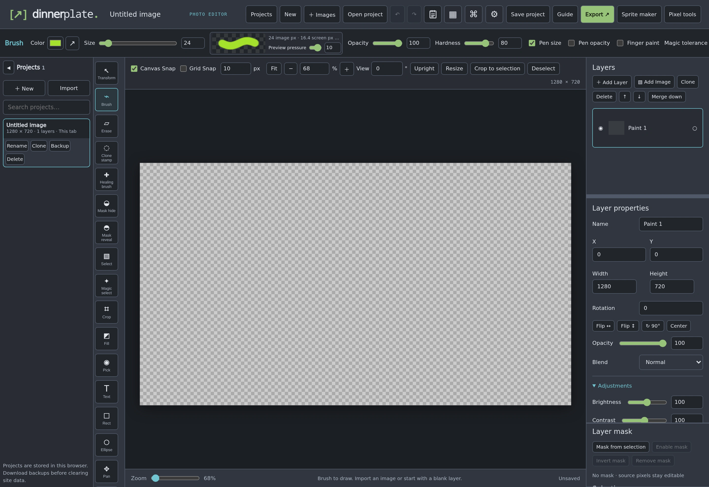

Creative software
Dinnerplate.party
A whole workshop.
One place to make things.
Edit photos, cut video, compose music, and build in 3D. A local-first creative toolkit, with your projects on your device.


Photo. Video. Audio. Music. 3D.Local-first by design.